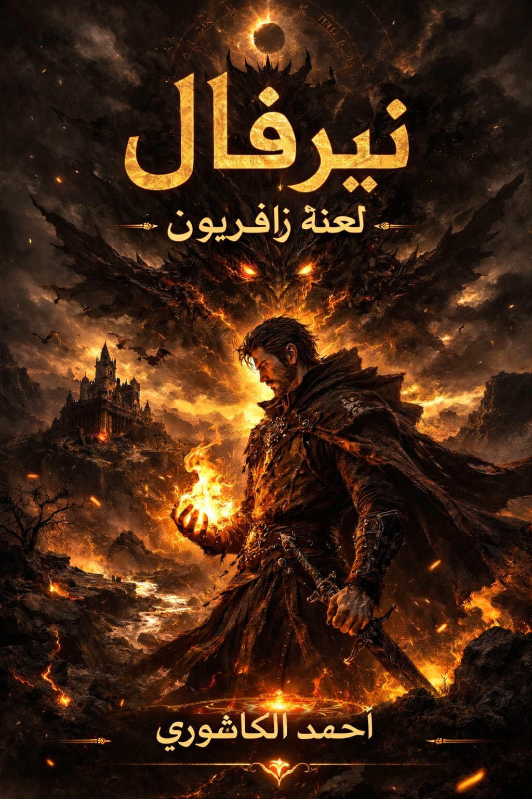

آ
سجل العالم • NERVAL
نيرفال
لعنة زافيريون
لم يختر أن يكون البطل… لكنه اختار أن يحاول.

THE OTHER WORLD
عالم لا ينتظر بطلًا مستعدًا
يبدأ كل شيء من المنصورة، مع آدم؛ شاب محطم يحاول الهروب من حياة أثقلته بالفشل والسخرية والخوف. ثم يفتح كتابًا غامضًا، فيجد نفسه في نيرفال، وسط حرب بين البشر والتنانين.
هنا لا تمنح النبوءة آدم القوة فقط، بل تضع أمامه سؤالًا أصعب: هل يصبح الإنسان قويًا لأنه اختير… أم لأنه يختار أن يتحمل المسؤولية؟
THE FIRST DRAGON
◈
نبوءة التنين الأول
سيأتي شخص من عالم آخر يحمل قوة التنين الأول في داخله، ويكون قادرًا على إعادة التوازن بين قوى العالم.
الحاملزافيريونالتوازن
THE ANCIENT ONE
التنين الأول
زافيريون
تنين أسطوري رمادي بعينين ذهبيتين. لا يرى نفسه سلاحًا تابعًا لآدم، بل شريكًا يختبر استحقاقه. تظهر روحه بسبب اللعنة، بينما يبقى الجسد المفقود جزءًا من الطريق الذي ينتظر آدم.
THE CHOSEN & THE WITNESSES
سجلات نيرفال
وجوه صنعتها النبوءة، الحرب، والخيار.
ل
ز
أ
ن
إ
السيطرة
هل يصبح التنين مجرد أداة في يد الإنسان؟
✦
عهد الدم أم عهد الثقة؟
آدم يرى أن التضحية الحقيقية تأتي من الثقة والصداقة، لا من إجبار كائن حي على الموت.
الشراكة
هل يمكن أن تكون القوة رابطة بين كائنين متساويين؟
CHRONICLES OF NERVAL
سجلات الفصول
رحلة آدم من الهروب… إلى أول وعد.